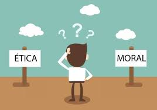

O que são Ética e Moral?
Ética e moral são conceitos fundamentais da filosofia e do convívio em sociedade. Ambos tratam do comportamento humano, mas possuem significados distintos.
Diferenças entre Ética e Moral:
- Ética: é o estudo filosófico da moral. Reflete sobre o que é certo ou errado, justo ou injusto, com base em princípios universais.
- Moral: é o conjunto de regras, valores e costumes adotados por uma sociedade ou grupo específico.
Exemplo:
A moral pode variar de uma cultura para outra (por exemplo, em relação a vestimentas ou alimentação), mas a ética busca refletir se essas normas respeitam os direitos humanos e a dignidade das pessoas.
“A moral é o costume, a ética é a reflexão sobre o costume.”